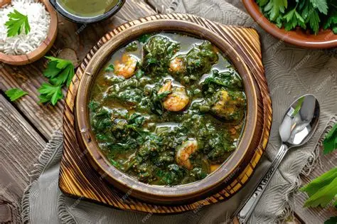

Koshari
A famous Egyptian street food made with rice, lentils, pasta, chickpeas, crispy fried onions, and a tangy tomato sauce with vinegar.

Full Medames
Slow-cooked fava beans served with olive oil, lemon juice, cumin, and sometimes eggs or vegetables.

Molokhia
A green soup/stew made from jute leaves, cooked with garlic and coriander, often served with chicken or rabbit and eaten with rice or bread.